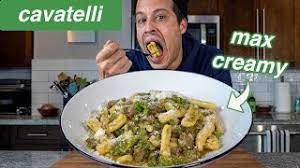

Cavatelli Pasta with Sausage and Broccoli

Description
This dish was created by Steve Cusato, the creator of the YouTube channel "NOT ANOTHER COOKING SHOW".
It incorporates hand made cavatelli pasta, torn up sausage, chopped broccoli, sliced garlic, parmesan and blended up cherry peppers
(peppadew peppers in my case, since I couldn't find cherry peppers).
This is a great dinner meal, since between prep and cook time, it takes roughly an hour. Not the shortest recipe, but still not
ridiculously long. Especially for how good the dish turns out, I think it is a great week night meal for the time commitment.
Ingredients
- 5 Oz of Fresh Cavatelli (1/4 of the dough serves 1 person)
- 1 Sweet Italian Sausage Link, Small pieces removed from its casing
- 1/2 of a Large Broccoli Crown, florets halved or Quartered and cut into small dice
- 2 Garlic Cloves, sliced thinly
- 1/2 Jar of Cherry Peppers (pureed with 2-3 tablespoons of the liquid they are packed in)
- 1 Handful of Parmigiano Reggiano, Grated Finely
- Salt
Semolina Dough for Cavatelli
- 440 grams Semolina Flour
- 260 grams Warm Water
Steps
- Make the Dough:
- Build a well of flour on the table and pour the water into the center.
Using a fork, beat the water like you’d scramble eggs while using the fork to slowly incorporate the flour from the wall.
Work it until it reaches the consistency of thick pancake batter and becomes thick and tacky.
Then use a bench scraper and start to fold and cut in the flour until the mixture comes together and forms a ball.
- Then begin to knead the dough. If it is sticky, add a tiny bit of flour at a time until it's no longer sticky but be careful not to add too much to make the dough dry.
Knead for 5-10 minutes, folding and rolling the dough onto itself.
Then wrap in plastic wrap and let it rest for 15 minutes to continue to hydrate and soften.
- After 15 minutes, knead the dough again for about 5-10 more minutes, it should be softer and much easier to knead.
Then wrap in plastic and if you want to use that day, let it rest at room temp until you’re ready to use, otherwise, for best results, rest in the fridge overnight.
(Note: be sure to pull the dough out about 1 hour before you want to make pasta)
- Forming the Cavatelli:
- Get the dough out of the plastic and cut about 1/4 of the dough and wrap the rest up so it doesn’t dry out.
Then roll that piece of dough out with the palm of your hands into a long 1/2 inch thick rope.
The thickness of the dough matters.. I find 1/2 inch is a good thickness.
- Now fold the rope in half and then fold it again so that you have 4 equal strips and then cut them so they are all independent of each other.
- Cavatelli can be a number of sizes. You can use 1 finger, 2 fingers or 3 fingers to measure and roll out the Cavatelli.
- Measure the pieces with your 3 fingers and cut the dough, then align your 3 fingers over the piece of dough, press down gently, then roll back towards you.
The pressure is essential here so just calibrate how much you apply and then you can start to really bang out the shape quite quickly,
creating a really nice, evenly formed Cavatelli. Then get them into a vessel with plenty of semolina flour to ensure they don’t stick.
- Cooking the Pasta:
- Cut the broccoli, garlic and tear the sausage out of its casing into small pieces.
Then take the cherry peppers and some of the juice it's packed in, and puree until it's a smooth sauce.
- The set up at the stove is a medium size pot to cook the pasta and I'm using my 3 qt saucier which is my go to pasta pot but a frying or sauté pan works great too.
As you scale the recipe up to serve 3-4, you should use bigger pans.
- Get the saucier hot then add a little olive oil to coat the pan and once hot, add the sausage,
spread it out and then leave it alone for a second and try to brown the sausage, after a few minutes,
start stirring it up, breaking up any pieces that are too big, I like a nice medium sized chunk for this recipe,
and then just allow those pieces of sausage to brown really well, once each piece of sausage is nicely brown,
remove from the pan keeping the oil in the saucier, return back to the heat and set the sausage aside while you add in the broccoli.
- Season with salt and treat the broccoli the same way as the sausage.
Add a little bit more oil if needed, give it a quick toss and then allow it to sear on one side untouched for a few minutes.
- Once that side of the broccoli browns nicely, stir it around to brown the other sides and then add in the garlic.
If you need a little more oil, add some, and then cook until the garlic brown. We don’t need the broccoli fully cooked at this point.
Then return the sausage back to the pot and bring it all together.
- Now the water is boiling in the pot next to the pan, I’m going to add 2-3 tablespoons of salt,
not too much or you could risk over-salting the dish in the end. Then add the cavatelli,
they will only cook for 1 1/2 to 2 minutes, keep them moving and they will float when they are ready.
- Now the garlic is nicely toasted, add in a few tablespoons of that cherry pepper puree.
Toss everything in the sauce then I’m going to take some pasta water and basically deglaze the pan with it.
- Around this time the pasta should begin to start floating,
at this point immediately get it out of the water and into the sauce along with another 3 tablespoons or
so of pasta water and turn the heat on and begin to toss and stir the pasta in the sauce and reduce
that sauce until it thickens and coats and glazes the pasta.
- Once that sauce thickens, turn the heat off,
I’m going to thicken it back out with a little more pasta water because I’m going to add cheese now and I need a liquid to melt it into.
- Tossing and stirring the pasta off the heat will also help cool the pasta a bit before adding the cheese so the cheese melts creamy and not stringy.
- Start to sprinkle the cheese into the pasta, stirring or tossing constantly until the sauce is creamy and glazes the pasta.
If the sauce thickens too much, use a little pasta water to adjust it. Check the seasoning at this point as well. Ready to serve.
- Serve in a bowl with Parmigiano Reggiano and you’re in heaven.